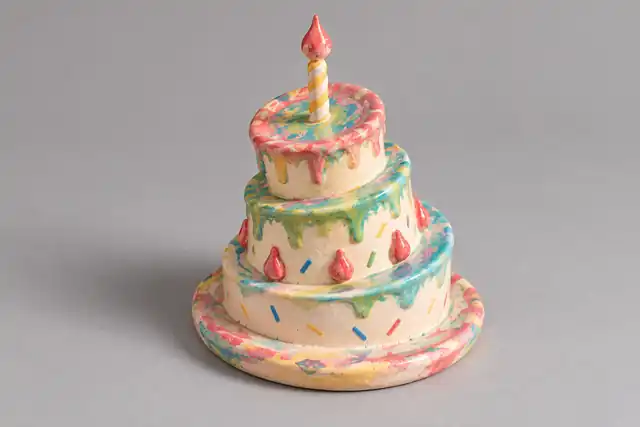

VISUAL OBJECT / ART DIRECTION / 2026
CAKEOBJECT
A Drawing Becomes Physical
从二维手绘语言出发，把倾斜、层叠、滴落与彩色符号转译成具有体积与重量感的虚构实体。

01 / CONCEPT
熟悉的形态，轻微偏离现实。
CAKE OBJECT 是一次从手绘语言出发的虚构实体研究。倾斜的层叠结构、滴落的边界与彩色符号组成物体的视觉语汇。日光、舞台和近景提供三种观看距离，在可信的光影中呈现一个略微偏离日常的存在。
三层体块保持不完全对齐，建立不稳定但可识别的轮廓。
边缘不是规则切面，而是保留手绘中流动、融化的感觉。
彩色短划与水滴符号像表面记号，而非装饰贴图。
黄白螺旋杆与红色顶端建立明确的上升方向。
高光釉面保留陶瓷般反射，同时避免过度光滑的 3D 感。
以真实摄影逻辑为基础，仅保留少量超现实偏移。
02 / OBJECT STUDY
日光中的体积
俯视研究用于检查轮廓、重心，以及层叠主体与垂直构件之间的关系。
